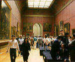

呂清夫 撰文

看看台灣的藝術作品，可以感覺到民氣充沛，但是讀一讀台灣的藝術評介，則又顯得眾說紛紜。近年由於美術館館刊的出現，藝術評介的情況似有改善，但在本書牽涉的過去三十年，則情況並不樂觀。換一個國度，如在日本，也許本書的許多文章都可以不寫，但在台灣，那麼，可能還是非寫不可。這主要因為台灣社會一直美育不彰，藝壇又一直資訊不足之故。我們乍看有很多藝術雜誌，但是可能由於現實的因素，常常顯得專業不足，不少文字難免有宣傳、「打畫」的傾向，少數雜誌甚至淪為廣告主的型錄，或者廣告被包裝成內文一般，所以要求專業並不容易。自然，純粹探討問題的文章並非沒有，但因專業文字工作者可以說無甚出路，故頗有壯夫不為的傾向，多半的情況可能只是湊合湊合而已。但是更嚴重的可能是，台灣藝壇一般而言，語文程度較差，包括古文、外文根基都未必很好，所以在古今中外思想的探討上就比較弱勢，根基一差，寫出的文章可能偏向個人的雜感。但某些同時搞創作、又搞理論或評論的人卻說，外交不重要，資料也不重要，重要的是人文的、本土的情懷，從而形成所謂本土派、或國粹主義者。我在本書中曾提到﹕「事實上像美術心理學那樣的東西，真不知要如何本土，也不知還要什麼人文，但是外交則是非常重要的。它研究的內容在全人類來說，乃是人同此心、心同此理，只是發源於西方而已，故無土洋之分。」論者或者會說，美術心裡學算老幾？不過這些論者蠻推崇的李澤厚則說美術心理學將是未來大陸美學的主流之一。這裡之所以提到大陸學者，最主要的是因為台灣藝壇的本土派過去在仇外之外，喜歡抬出大陸三十年代的寫實主義，事實上大陸近年變化蠻大，絕非過去的本土派始料所及。其後的本土派則注意起了安德魯•懷斯或超寫實主義，其實他們和過去的本土派不變的仍在寫實上面。其實，寫實也可以有很好的作品，但是有些人卻不甘於被貼上保守的標籤，所以常要找些理由來自我肯定。近年的本土派雖然較無活動，但是那股暗潮應該並未消失，所以會借用政治上的口號來編雜誌或開畫展，有時則會相當程度的黨同排異，一些研究西方藝術的學者難免受到他們的冷眼，似乎認為這些人對本土沒啥貢獻，重要性不高，其中自然也不無地盤主義的傾向。也因此，台灣的藝術觀念一直十分紊亂，李仲生在世時的擔憂嘆至今似乎仍未消失！因之，本書有相當的篇幅在釐清這種藝術的觀念，如外文是否重要？寫實與超寫實是否相同？東方傳統與現代主義果真誓不兩立？現代與後現代孰優？等等問題，有些文章雖然是在一、二十年前寫的，然到今天，問題仍未消失。藝壇之所以事隔多年卻依然故我，主要可能因為台灣藝壇的體質不良。本來「畫就是畫」就好了，偏偏台灣畫家常是「話家」，其兼做理論或所謂評論恐怕也是因此而來，但是創作者一旦涉入太多理論往往沒什麼好處，只有佔去過多創作時間而已。自然，藝術家發表一些創作理念固有其必要，但如花去太多時間去排除異己便可能損人而不利己，對藝壇更沒什麼好處。就西方藝術的探討而言，如果沒有相當的外文基礎，那麼如要探討，可能只有望「文」生「義」，或看圖識「字」，或土法煉鋼而已，往往搔不到癢處。但是台灣藝的壇人士一般而言，語文程度普遍不高。作為畫家，語文自然並不重要，但是作為大學生、研究生或學位的追求者則語文程度乃是最基本要件，因為其中牽涉到學術的研究，只有學術研究才跟學位有關。羅丹、塞尚、畢卡索都沒什麼學位，羅丹、塞尚投考美術學院更是名落孫山，但他們一樣可以成為大師，因為創作與學術並無必然關係。偏偏台灣由於傳統的科舉觀念，藝術家也非要弄個學位不可，於是問題就來了，最少在現代藝術的探討上往往找不到交集，甚至亂成一團。據王秀雄先生表示，近年大陸藝術科系的招生非常注意學生的外文程度，外文程度列為錄取學生的重要依據。至於大學藝術教師的升等更要先看外文程度，甚至要看第二種外國語的能力，我想這就對了。果真如此，不出幾年，大陸的現代藝術將會超越台灣，他們對於現代藝術將可以見微知著，不必瞎猜。回顧光復之初，全省師範學校的藝術科考試亦無方便之門，藝術科的考生必須與普通科一樣先通過同樣標準的學科考試，然後才考術科，術科等於是額外加考的，所以錄取綠比聯考還嚴格得多，這樣考出來的學生素質自然不一樣，東方畫會的有些成員就是台北師範的學生。另外，台灣藝壇如果碰到圈外的人介入文字工作，則又出現新的問題，主要因為台灣的升學主義導致美育的失敗，一般人的審美素養可以說普遍不足，所以他們如果因為外文較好、或屬媒體人士，但一涉入藝術評介，往往問題叢生，使得原本觀念紊亂的的台灣藝壇亂上加亂，這再加上社會普遍輕視藝術，所以原來的亂局也就任由自生自滅了。本書的文字即在這樣的背景之下產生，也希望這個背景有所改進。自然，其中很多地方是在探討近年台灣藝壇的蓬勃面，從一九八四年的「新展望」展到一九九七的「威尼斯雙年展台灣館」，都是探討的對象。凡認真走過的都必留下痕跡，並在美術史上增添新頁，因之，本書取名「美術史的軌跡」。圖片部份亦以「新展望」展以後的作品為主軸，主要因為之前的中堅藝術家之作品大家多已耳熟能詳，限於篇幅，只將近年可能較不常見的作品登錄出來，但也限於手頭已有的資料或幻燈片，其他也只好割愛了。喜愛美術、關心美術已經將近半個世紀，這裡面有點意見是很自然的，但絕對是出自肺腑之言，其中大部分的意見至今仍無稍改。這些「恰似飛鴻踏雪泥」的鱗爪對個人而言，應是生命中重要的紀念。